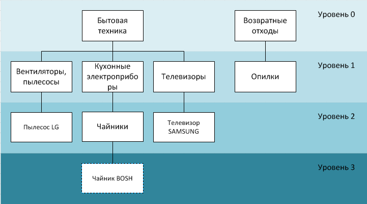
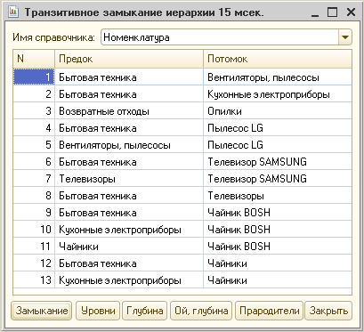
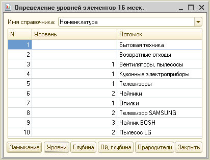
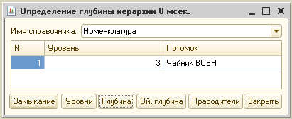
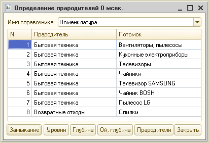
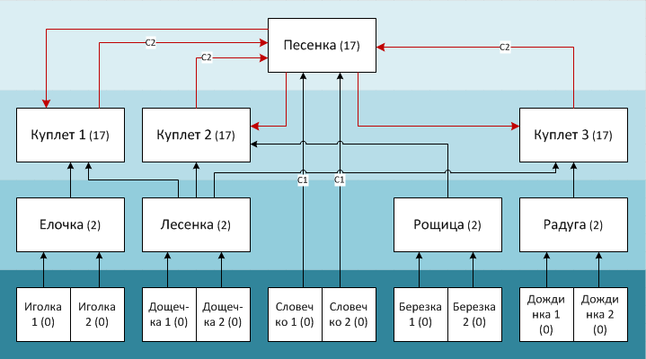
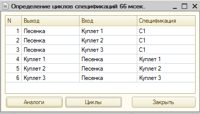
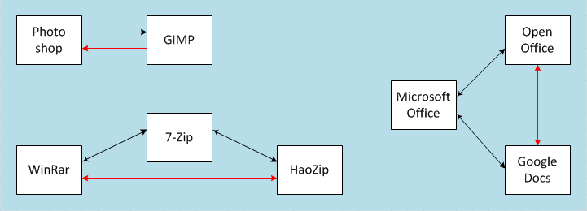
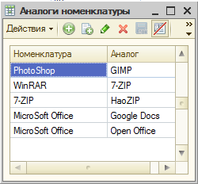
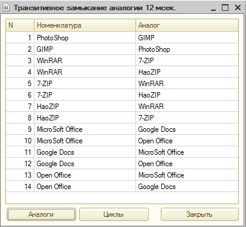

В продолжение публикации «Транзитивное замыкание запросом» [http://infostart.ru/public/158512/] добавлены другие варианты использования того же приема. Приведены запросы для быстрого определения уровней всех элементов справочника, максимальной глубины справочника, прародителей произвольных элементов справочника, запрос для быстрого определения циклов (на примере справочника спецификаций «1С:Управление производственным предприятием») и определения множеств аналогов номенклатуры (также на примере конфигурации «1С:Управление производственным предприятием»).
В предыдущей статье был рассмотрен прием «матричного умножения» в расчете транзитивного замыкания отношений, его теоретическое обоснование и реализация на платформе «1С:Предприятие 8» на примере замыкания иерархии справочника. Из-за того, что данный прием хорошо ложится на возможности конструирования текста запроса на языке 1С, получаемый с использованием этого приема код оказывается очень компактным (всего 9 строк!) и быстрым. Возможно, у кого-то могло сложиться впечатление, что решением одной экзотической задачи с непонятным названием область применения рассмотренного метода и ограничивается. Однако, ЭТО НЕ ТАК! Существуют более приземленные практические задачи, где с большой выгодой можно применить разработанный прием построения запроса. В данной статье рассмотрены сразу пять таких задач.
1. Быстрое определение уровней всех элементов справочника одним пакетным запросом.
При использовании объектной модели для получения уровня элемента иерархического справочника можно использовать функцию «Уровень». Она показывает уровень вложенности текущего элемента справочника, при этом элементы в корне иерархии, вообще не имеющие родителей, имеют уровень «0».
У этой функции два недостатка. Во-первых, она медленно выполняется. Почему это так, понять несложно, если вспомнить, как хранится иерархия в таблицах СУБД. Во-вторых, функция «Уровень» не работает в запросе. А этого как раз очень часто и не хватает: наличие колонки, содержащей уровень иерархии элемента, упростило бы решение многих задач запросами.
Выходом может быть использование следующего запроса и построенной на нем функции
Функция УровниИерархии(ИмяСправочника, МаксимальнаяДлинаПути) Экспорт
Пролог = "ВЫБРАТЬ Родитель НачалоДуги, Ссылка КонецДуги ПОМЕСТИТЬ ЗамыканияДлины1 ИЗ Справочник.Номенклатура
| ГДЕ Родитель <> Значение(Справочник.Номенклатура.ПустаяСсылка)
| ОБЪЕДИНИТЬ ВЫБРАТЬ Ссылка, Ссылка ИЗ Справочник.Номенклатура;";
Рефрен = "ВЫБРАТЬ РАЗЛИЧНЫЕ ПерваяДуга.НачалоДуги, ВтораяДуга.КонецДуги ПОМЕСТИТЬ ЗамыканияДлины#2 ИЗ ЗамыканияДлины#1 КАК ПерваяДуга
| СОЕДИНЕНИЕ ЗамыканияДлины#1 КАК ВтораяДуга ПО ПерваяДуга.КонецДуги = ВтораяДуга.НачалоДуги;
| УНИЧТОЖИТЬ ЗамыканияДлины#1;";
Эпилог = "ВЫБРАТЬ КОЛИЧЕСТВО(НачалоДуги) - 1 Предок, КонецДуги Потомок ИЗ ЗамыканияДлины#2 СГРУППИРОВАТЬ ПО КонецДуги";
Запрос = Новый Запрос(СтрЗаменить(Пролог, "Номенклатура", ИмяСправочника));
МаксимальнаяДлинаЗамыканий = 1;
Пока МаксимальнаяДлинаЗамыканий < МаксимальнаяДлинаПути Цикл
Запрос.Текст = Запрос.Текст + СтрЗаменить(СтрЗаменить(Рефрен, "#1",Формат(МаксимальнаяДлинаЗамыканий, "ЧГ=0")), "#2", Формат(2 * МаксимальнаяДлинаЗамыканий, "ЧГ=0"));
МаксимальнаяДлинаЗамыканий = 2 * МаксимальнаяДлинаЗамыканий
КонецЦикла;
Запрос.Текст = Запрос.Текст + СтрЗаменить(Эпилог, "#2", Формат(МаксимальнаяДлинаЗамыканий,"ЧГ=0"));
Возврат Запрос.Выполнить().Выгрузить()
КонецФункции
Запрос в данной функции отличается от базового запроса из основной статьи только эпилогом. Работа функции построена на следующем наблюдении: так как таблица транзитивного замыкания содержит всех предков любого элемента, то, чтобы определить его уровень, нужно просто посчитать этих предков.
Разумеется, сконструированный внутри функции текст запроса не обязательно сразу выполнять. Его можно сделать частью более общего пакетного запроса, в котором будет использоваться получаемая на последнем этапе таблица. Это касается и всех следующих примеров.
Рассмотрим, для примера, следующую иерархию номенклатуры:

Замыкание иерархии вернет следующую таблицу:

Приведенная функция на основе подсчета предков в замыкании вернет следующую таблицу:

2. Быстрое определение максимальной глубины иерархии одним пакетным запросом.
Данная задача может возникнуть, например, при выводе иерархических списков, когда требуется заранее определить «высоту» (число этажей) отображения списка. Трудность задачи в том, что приходится просматривать все элементы справочника, для каждого из которых необходим вызов функции «Уровень». Хотя такой код весьма прост,
Функция МаксимальныйУровеньСправочника(ИмяСправочника, Ответ = 0) Экспорт
Выборка = Справочники[ИмяСправочника].Выбрать();
Пока Выборка.Следующий() Цикл Ответ = Макс(Ответ, Выборка.ПолучитьОбъект().Уровень())
КонецЦикла;
Возврат Ответ
КонецФункции
время его выполнения сильно и неприятно удивляет. В прилагаемой к статье обработке есть кнопка «Ой, глубина», которая вызывает написанную таким образом функцию и позволяет убедиться в большом времени ее работы. Конечно, можно использовать рекурсию, загрузив весь справочник в оперативную память, однако на больших справочниках применение рекурсии также будет не столь эффективным из-за большого количества отдельных вычислений. Пример использования рекурсии приведен здесь [http://nashe1c.ru/materials-view.jsp?id=371]. Решение не образцовое, однако доказывает интерес к данной теме.
В результате, наилучшим решением оказывается использование предлагаемого запроса в следующем виде:
Функция ГлубинаИерархии(ИмяСправочника, МаксимальнаяДлинаПути) Экспорт
Пролог = "ВЫБРАТЬ Родитель НачалоДуги, Ссылка КонецДуги ПОМЕСТИТЬ ЗамыканияДлины1 ИЗ Справочник.Номенклатура
| ГДЕ Родитель <> Значение(Справочник.Номенклатура.ПустаяСсылка)
| ОБЪЕДИНИТЬ ВЫБРАТЬ Ссылка, Ссылка ИЗ Справочник.Номенклатура;";
Рефрен = "ВЫБРАТЬ РАЗЛИЧНЫЕ ПерваяДуга.НачалоДуги, ВтораяДуга.КонецДуги ПОМЕСТИТЬ ЗамыканияДлины#2 ИЗ ЗамыканияДлины#1 КАК ПерваяДуга
| СОЕДИНЕНИЕ ЗамыканияДлины#1 КАК ВтораяДуга ПО ПерваяДуга.КонецДуги = ВтораяДуга.НачалоДуги;
| УНИЧТОЖИТЬ ЗамыканияДлины#1;";
Эпилог = "ВЫБРАТЬ ПЕРВЫЕ 1 КОЛИЧЕСТВО(НачалоДуги) - 1 Глубина, КонецДуги Потомок ИЗ ЗамыканияДлины#2 СГРУППИРОВАТЬ ПО КонецДуги УПОРЯДОЧИТЬ ПО КОЛИЧЕСТВО(НачалоДуги) - 1 УБЫВ";
Запрос = Новый Запрос(СтрЗаменить(Пролог, "Номенклатура", ИмяСправочника));
МаксимальнаяДлинаЗамыканий = 1;
Пока МаксимальнаяДлинаЗамыканий < МаксимальнаяДлинаПути Цикл
Запрос.Текст = Запрос.Текст + СтрЗаменить(СтрЗаменить(Рефрен, "#1",Формат(МаксимальнаяДлинаЗамыканий, "ЧГ=0")), "#2", Формат(2 * МаксимальнаяДлинаЗамыканий, "ЧГ=0"));
МаксимальнаяДлинаЗамыканий = 2 * МаксимальнаяДлинаЗамыканий
КонецЦикла;
Запрос.Текст = Запрос.Текст + СтрЗаменить(Эпилог, "#2", Формат(МаксимальнаяДлинаЗамыканий,"ЧГ=0"));
Возврат Запрос.Выполнить().Выгрузить()[0].Глубина
КонецФункции
Для краткости, случай, когда в справочнике нет ни одного элемента, не рассматривается.
Для того же примера глубина будет равна 3

3. Определение прародителя (родителя верхнего уровня) в пакетном запросе.
Судя по обсуждениям на форумах, этот вопрос встречается достаточно часто. Широко известно решение, использующее итоги по иерархии [в комментарии (6) к предыдущей статье]. Однако оно не подходит для того, чтобы использоваться в середине пакетного запроса, не дает простой возможности одновременного определения родителей верхнего уровня нескольких элементов и, вероятно, не работает максимально быстро. От этих недостатков свободно следующее решение
Функция Прародители(ИмяСправочника, МаксимальнаяДлинаПути) Экспорт
Пролог = "ВЫБРАТЬ Родитель НачалоДуги, Ссылка КонецДуги ПОМЕСТИТЬ ЗамыканияДлины1 ИЗ Справочник.Номенклатура
| ГДЕ Родитель <> Значение(Справочник.Номенклатура.ПустаяСсылка)
| ОБЪЕДИНИТЬ ВЫБРАТЬ Ссылка, Ссылка ИЗ Справочник.Номенклатура;";
Рефрен = "ВЫБРАТЬ РАЗЛИЧНЫЕ ПерваяДуга.НачалоДуги, ВтораяДуга.КонецДуги ПОМЕСТИТЬ ЗамыканияДлины#2 ИЗ ЗамыканияДлины#1 КАК ПерваяДуга
| СОЕДИНЕНИЕ ЗамыканияДлины#1 КАК ВтораяДуга ПО ПерваяДуга.КонецДуги = ВтораяДуга.НачалоДуги;
| УНИЧТОЖИТЬ ЗамыканияДлины#1;";
Эпилог = "ВЫБРАТЬ НачалоДуги Предок, КонецДуги Потомок ИЗ ЗамыканияДлины#2
| ГДЕ НачалоДуги <> КонецДуги И НачалоДуги.Родитель = Значение(Справочник.Номенклатура.ПустаяСсылка)";
Запрос = Новый Запрос(СтрЗаменить(Пролог, "Номенклатура", ИмяСправочника));
МаксимальнаяДлинаЗамыканий = 1;
Пока МаксимальнаяДлинаЗамыканий < МаксимальнаяДлинаПути Цикл
Запрос.Текст = Запрос.Текст + СтрЗаменить(СтрЗаменить(Рефрен, "#1",Формат(МаксимальнаяДлинаЗамыканий, "ЧГ=0")), "#2", Формат(2 * МаксимальнаяДлинаЗамыканий, "ЧГ=0"));
МаксимальнаяДлинаЗамыканий = 2 * МаксимальнаяДлинаЗамыканий
КонецЦикла;
Запрос.Текст = Запрос.Текст + СтрЗаменить(Эпилог, "#2", Формат(МаксимальнаяДлинаЗамыканий,"ЧГ=0"));
Возврат Запрос.Выполнить().Выгрузить()
КонецФункции
Для того же примера...

4. Быстрое определение циклов произвольной длины одним пакетным запросом.
Определение циклов основано на следующей идее:
Будем считать уровнем элемента количество прямо или косвенно «предшествующих» ему других элементов (в смысле конкретного отношения). Такой уровень на основе таблицы транзитивного замыкания легко посчитать для ориентированного графа любого вида. Нетрудно догадаться, что уровень всех элементов, находящихся в цикле, будет одинаков. Тогда признаком того, что дуга принадлежит циклу, будет одинаковый уровень ее концов.
В результате получаем следующий запрос, находящий дуги, принадлежащие циклу.
Функция ЦиклыСпецификацийУПП(МаксимальнаяДлинаПути) Экспорт
Пролог = "ВЫБРАТЬ Выход.Номенклатура НачалоДуги, Вход.Номенклатура КонецДуги, Выход.Ссылка ПОМЕСТИТЬ ИсходноеОтношение
| ИЗ Справочник.СпецификацииНоменклатуры.ВыходныеИзделия КАК Выход
| СОЕДИНЕНИЕ Справочник.СпецификацииНоменклатуры.ИсходныеКомплектующие КАК Вход ПО Выход.Ссылка = Вход.Ссылка
| ГДЕ Выход.Ссылка.Активная;
| ВЫБРАТЬ РАЗЛИЧНЫЕ НачалоДуги, КонецДуги ПОМЕСТИТЬ ЗамыканияДлины1 ИЗ ИсходноеОтношение
| ОБЪЕДИНИТЬ ВЫБРАТЬ НачалоДуги, НачалоДуги ИЗ ИсходноеОтношение
| ОБЪЕДИНИТЬ ВЫБРАТЬ КонецДуги, КонецДуги ИЗ ИсходноеОтношение;";
Рефрен = "ВЫБРАТЬ РАЗЛИЧНЫЕ ПерваяДуга.НачалоДуги, ВтораяДуга.КонецДуги ПОМЕСТИТЬ ЗамыканияДлины#2 ИЗ ЗамыканияДлины#1 КАК ПерваяДуга
| СОЕДИНЕНИЕ ЗамыканияДлины#1 КАК ВтораяДуга ПО ПерваяДуга.КонецДуги = ВтораяДуга.НачалоДуги;
| УНИЧТОЖИТЬ ЗамыканияДлины#1;";
Эпилог = "ВЫБРАТЬ КОЛИЧЕСТВО(НачалоДуги) Уровень, КонецДуги Элемент ПОМЕСТИТЬ ТаблицаУровней ИЗ ЗамыканияДлины#2 СГРУППИРОВАТЬ ПО КонецДуги;
| ВЫБРАТЬ ИсходноеОтношение.НачалоДуги Предок, ИсходноеОтношение.КонецДуги Потомок, ИсходноеОтношение.Ссылка Спецификация ИЗ ИсходноеОтношение
| СОЕДИНЕНИЕ ТаблицаУровней КАК Начало ПО ИсходноеОтношение.НачалоДуги = Начало.Элемент
| СОЕДИНЕНИЕ ТаблицаУровней КАК Конец ПО ИсходноеОтношение.КонецДуги = Конец.Элемент
| ГДЕ Начало.Уровень = Конец.Уровень";
Запрос = Новый Запрос(Пролог);
МаксимальнаяДлинаЗамыканий = 1;
Пока МаксимальнаяДлинаЗамыканий < МаксимальнаяДлинаПути Цикл
Запрос.Текст = Запрос.Текст + СтрЗаменить(СтрЗаменить(Рефрен, "#1",Формат(МаксимальнаяДлинаЗамыканий, "ЧГ=0")), "#2", Формат(2 * МаксимальнаяДлинаЗамыканий, "ЧГ=0"));
МаксимальнаяДлинаЗамыканий = 2 * МаксимальнаяДлинаЗамыканий
КонецЦикла;
Запрос.Текст = Запрос.Текст + СтрЗаменить(Эпилог, "#2", Формат(МаксимальнаяДлинаЗамыканий,"ЧГ=0"));
Возврат Запрос.Выполнить().Выгрузить()
КонецФункции
Запрос приведен на примере проверки зацикливания спецификаций продукции для типовой конфигурации «1С: Управление производственным предприятием». Приведенная функция выдает список связей входов и выходов спецификаций, находящихся в цикле вместе с указанием самих спецификаций. Очевидно, что ошибочной (приводящей к зацикливанию) будет, вероятнее всего, только одна из указанных связей. Можно не ограничиваться только сборочными спецификациями. Но следует учесть, что в этом общем случае могут существовать и правильные циклы сборки-разборки, которые запрос также будет показывать.
Понятно, что такой подход будет обнаруживать циклы любой длины. Безошибочно ограничивать максимальную длину пути можно количеством активных спецификаций, как и сделано в прилагаемой обработке.
Для примера приведен набор спецификаций, содержащий циклы. Это спецификация структуры всем известной детской песни "Вместе весело шагать"

"Песенка" получается по двум спецификациям: С1(Словечко1 + Словечко2) и С2(Куплет1 + Куплет2 + Куплет3).
Функция, обнаруживающая циклы, вернет следующую таблицу

5. Определение множества взаимозаменяемых позиций (аналогов) номенклатуры.
Существует несколько решений для хранения информации о взаимозаменяемости номенклатурных позиций [http://infostart.ru/public/128065/]. Например, в УПП для этого используется регистр сведений «АналогиНоменклатуры», в записях которого указывается собственно номенклатура и заменяющий ее аналог (назначение других полей этих записей для данного обсуждения не существенно). Чаще всего можно считать, что если для детали “А” аналогом является деталь “Б”, то верно и обратное: для детали “Б” аналогом будет деталь “А”. Кроме того, если деталь “Б” является аналогом детали “А”, а деталь “В” является аналогом детали “Б”, то деталь “В” также будет аналогом детали “А”.
Как же следует задавать аналоги: по цепочке “А”->”Б”, ”Б”->”В” или звездой “А”->“Б”, ”А”->“В”? - Предлагаемый метод позволяет не задумываться об этом. В любом случае будут найдены все аналоги каждой номенклатуры. Для этого используется функция
Функция ТранзитивноеЗамыканиеАналогии(МаксимальнаяДлинаПути) Экспорт
Пролог = "ВЫБРАТЬ Номенклатура КАК НачалоДуги, Аналог КАК КонецДуги ПОМЕСТИТЬ ЗамыканияДлины1 ИЗ РегистрСведений.АналогиНоменклатуры
| ОБЪЕДИНИТЬ ВСЕ ВЫБРАТЬ Аналог, Номенклатура ИЗ РегистрСведений.АналогиНоменклатуры
| ОБЪЕДИНИТЬ ВСЕ ВЫБРАТЬ Номенклатура, Номенклатура ИЗ РегистрСведений.АналогиНоменклатуры;";
Рефрен = "ВЫБРАТЬ РАЗЛИЧНЫЕ ПерваяДуга.НачалоДуги, ВтораяДуга.КонецДуги ПОМЕСТИТЬ ЗамыканияДлины#2 ИЗ ЗамыканияДлины#1 КАК ПерваяДуга
| ВНУТРЕННЕЕ СОЕДИНЕНИЕ ЗамыканияДлины#1 КАК ВтораяДуга ПО ПерваяДуга.КонецДуги = ВтораяДуга.НачалоДуги;
| УНИЧТОЖИТЬ ЗамыканияДлины#1;";
Эпилог = "ВЫБРАТЬ НачалоДуги Предок, КонецДуги Потомок ИЗ ЗамыканияДлины#2 ГДЕ НачалоДуги <> КонецДуги";
Запрос = Новый Запрос(Пролог);
МаксимальнаяДлинаЗамыканий = 1;
Пока МаксимальнаяДлинаЗамыканий < МаксимальнаяДлинаПути Цикл
Запрос.Текст = Запрос.Текст + СтрЗаменить(СтрЗаменить(Рефрен, "#1",Формат(МаксимальнаяДлинаЗамыканий, "ЧГ=0")), "#2", Формат(2 * МаксимальнаяДлинаЗамыканий, "ЧГ=0"));
МаксимальнаяДлинаЗамыканий = 2 * МаксимальнаяДлинаЗамыканий
КонецЦикла;
Запрос.Текст = Запрос.Текст + СтрЗаменить(Эпилог, "#2", Формат(МаксимальнаяДлинаЗамыканий,"ЧГ=0"));
Возврат Запрос.Выполнить().Выгрузить()
КонецФункции
Используя данный запрос, можно существенно сэкономить на хранении информации об аналогах. То есть, вместо указания для каждой номенклатуры всех ее аналогов, можно указать основную позицию и ее заменители «звездой», либо задать аналоги по цепочке, либо пользуясь комбинацией этих подходов – в виде дерева. В результате будет храниться только «остов» отношения аналогии. Например, если в группе взаимозаменяемости 100 деталей, то по максимуму потребуется ввести 100х99 = 9900 записей типа номенклатура-аналог, а в случае хранения только основных записей потребуется хранить всего 99 записей!
На следующем рисунке приведены примеры аналогов. Красным обозначены связи, которые не хранятся в БД.

В УПП понадобится 5 записей регистра сведений "Аналоги номенклатуры" для этих связей.

После транзитивного замыкания аналогии будет сформирована полная таблица аналогов

Из-за фундаментального характера затрагиваемых понятий приведенные примеры, скорее всего, не исчерпывают всего списка применений предложенного приема. Надеюсь, приведенные решения являются достаточно поучительными и послужат хорошей основой для решения и других подобных практических задач.
Еще двум интереснейшим задачам-примерам будет посвящена отдельная статья.